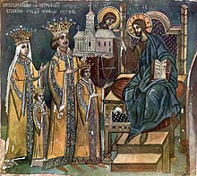

Despre Petru Rareș
Petru Rareș a fost domn al Moldovei de două ori, prima dată între 20 ianuarie 1527 și 18 septembrie 1538, iar a doua oară între 19 februarie 1541 și 3 septembrie 1546.
A fost fiul natural al lui Ștefan cel Mare cu o anume Răreșoaia, a cărei existență nu e documentată istoric. A urmat în linii mari politica internă și externă stabilită de tatăl său, având și o parte din calitățile acestuia - ambiția, îndrăzneala, vitejia, religiozitatea, gustul artistic - dar, fire mai aventuroasă, a făcut și erori, mai ales în politica externă.
Sursele principale care descriu originea lui Petru Rareș sunt Letopisețul lui Grigore Ureche, O samă de cuvinte a lui Ion Neculce și Descrierea Moldovei a lui Dimitrie Cantemir; în toate acestea se afirmă că era un fiu natural al lui Ștefan cel Mare cu o anume „Răreșoaia” și că în tinerețe se ocupa cu „măjeritul” (comerțul cu pește). Există și ipoteza că ar fi făcut parte din familia Cernat, boieri din Țara de Jos, proprietari ai întinsei moșii ce cuprindea lacul Brateș de lângă Galați, din care ulterior Petru Rareș va face danii de pescării unor mănăstiri.
O altă ipoteză o consideră pe Maria, mama lui Petru Rareș, ca făcând parte din neamul lui Isaia logofătul de la Baia, din vremea lui Alexandru cel Bun, strămoșul fraților Toader și Petru, care ar putea fi chiar Petru Rareș și fratele său dinspre mamă, Toader, iar soțul Mariei ar fi fost urmașul unui boier Bârlă de la Hârlău, cu a cărui familie se înrudea și mitropolitul Grigorie Roșca. Prin ctitoriile sale de la Baia, Hârlău și Voronețul legat de familia Bârlă, Petru Rareș s-a vădit și el legat de aceste locuri ale eventualei sale familii dinspre mamă.[3] Cert este că ambele ipoteze, care de fapt, nu sunt antagonice, conduc la părerea că mama lui Petru Rareș aparținea unui neam de boieri și nu era doar o simplă nevastă de târgoveț, așa cum se afirmă în legendele mai vechi.